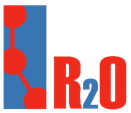

")
R2O and ODEMapster (deprecated)
R2O & ODEMapster is no longer been used or maintained by our group. It has been replaced by the morph suite of tools, which includes morph-RDB, morph-GFT and morph-streams.
R2O & ODEMapster is an integrated framework for the formal specification, evaluation, verification and exploitation of the semantic mappings between ontologies and relational databases. This integrated framework consists of:
R2O, a declarative, XML-based language that allows the description of arbitrarily complex mapping expressions between ontology elements (concepts, attributes and relations) and relational elements (relations and attributes).
 ODEMapster processor, which generates Semantic Web instances from relational instances based on the mapping description expressed in an R2O document. ODEMapster offers two modes of execution: Query driven upgrade (on-the-fly query translation) and massive upgrade batch process that generates all possible Semantic Web individuals from the data repository.
ODEMapster processor, which generates Semantic Web instances from relational instances based on the mapping description expressed in an R2O document. ODEMapster offers two modes of execution: Query driven upgrade (on-the-fly query translation) and massive upgrade batch process that generates all possible Semantic Web individuals from the data repository.

Recently in the context of the NeOn project, we have developed the ODEMapster plugin that is included in the NeOn Toolkit. This plugin offers to the user a GUI to create, execute, or query the R2O mappings.
To use ODEMapster plugin, first NeOn Toolkit has to be installed. NeOn Toolkit can be installed from www.neon-toolkit.org. Once downloaded, just execute the file and follow the instructions.
After Neon Toolkit has been installed, the next step is to install ODEMapster plugin. This can be done by the following actions:
- Open Neon Toolkit.
- From the Help menu of Neon Toolkit, choose “Software Updates” ? “Find and Install”.
- An Install/Update window will appear inside Neon Toolkit.
- if you have installed this plugin before, choose: “Search for update”
- if you haven't installed this plugin before, choose: “Search for new features”
- Select “Neon Toolkit Update Site” from the available update sites and click finish
- Select “ODEMapster” under “Ontology Population” and then click next
- Select “Agree” to the license agreement.
- Click “Finish” on the installation window.
For more complete information, see the manual de ODEMapster.
How it works?
For the hydrOntology and every database we have created an R2O document (that describes the correspondences between a database and the ontology). Then, we ran the ODEMapster processor to generate the RDF instances. IGN databases are stored in a MySQL and ORACLE, and the ontology is expressed in OWL.

Successful stories of ODEMapster
- FAO - http://fao.org
- Guntars Bumars - University of Latvia - Institute of Mathematics and Computer Science - http://www.lumii.lv/Pages/computer.htm
- Christian M. Fletcher - Department of Computer Science - Durham University - http://www.dur.ac.uk/ecs/computing.science/undergraduate09/whatis/
- iSOCO - http://www.isoco.com
- GIS4GOV project
- SemsorGrid - http://www.semsorgrid4env.eu/
- GeoLinkedData - http://geo.linkeddata.es/
- WEB n+1 - http://www.webenemasuno.es